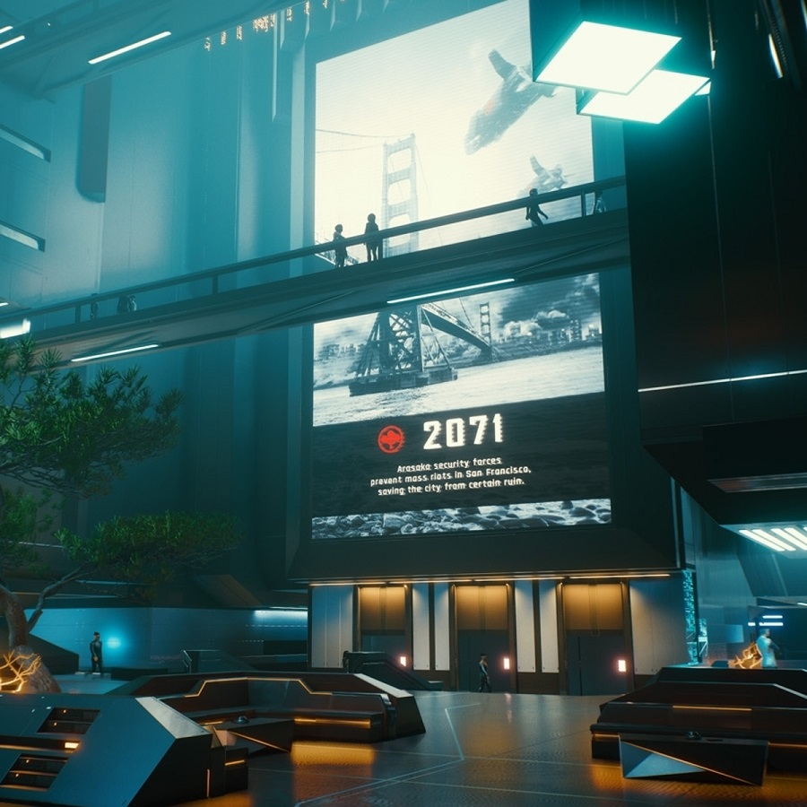

The Arasaka
The Arasaka Corporation was founded in 1915, by Sasai Arasaka in Chuo-ku. The Arasaka, is a world-wide megacorporation dealing in corporate security, banking, and manufacturing. It is one of the most influential megacorporations in the world.
The company is also the largest distributor of Japanese-made merchandise throughout the American, European, and Asian markets. Arasaka branded weapons and military vehicles are among the most sought after by police and security firms. The Arasaka Corporation maintains the largest and most powerful armed forces of any corporation in the world, with their guards renowned worldwide.